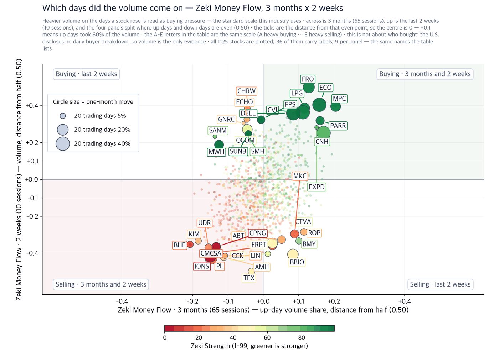
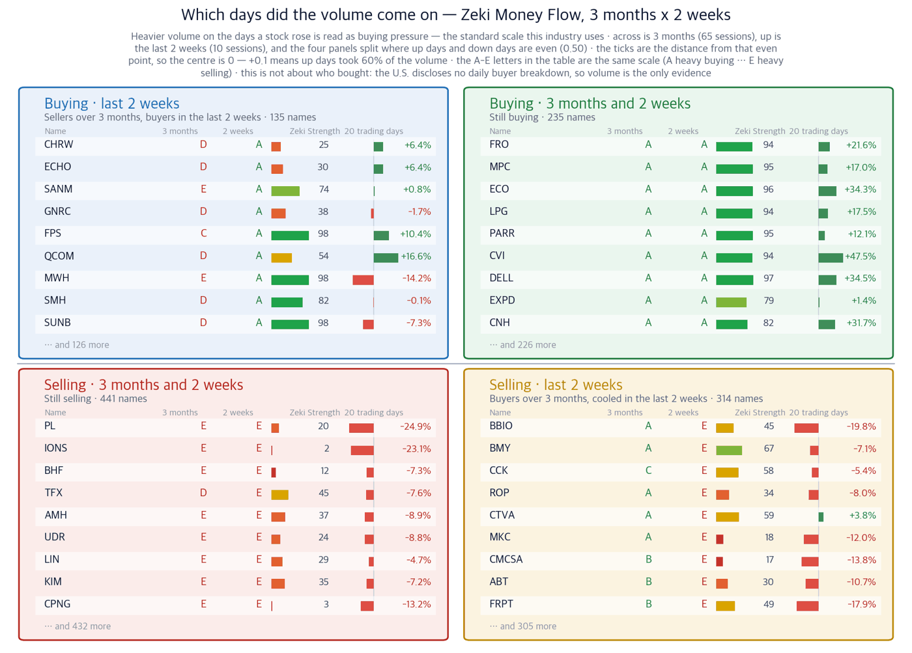

The index took back its 50-day line. Only one stock in three did
18 September 2026 · figures are as of the 17 September close
Companies we do not own, found in the newspapers — with the figures behind why they might earn their place.
S&P 500 7,638 (+1.14%) | Nasdaq 26,418 (+1.69%) | Dow 51,778 (+0.61%) | UST 10-year 4.95% | Zeki Signal Yellow |

How to read this
| Lit lamp | Today's regime. Green means buyers have the edge, yellow means wait, red means no new buys. |
| Filled squares | How many of the 7 conditions passed. More filled means firmer market structure. |
| All filled but not green | Something else pulled the grade down one step. The reason is printed under the lamp. |
The Zeki Signal reduces seven measures of the market regime to one light. Green means buyers have the edge, yellow means stand aside, red means do not buy. The S&P 500 and the Nasdaq pass 6 of the 7 measures; the Russell 2000 passes 5.
Executive summary — what to do now
Three conclusions first
New York rebounded on 17 September. The S&P 500 rose 1.14% and the Nasdaq 1.69%. But the median stock among the 1,136 we price rose only 0.28%. A handful of large companies carried the indexes.
Only 385 names, 33.9% of them, sit above their own 50-day average. The index reclaimed that line; two stocks in three have not. Just 296 names (26.1%) are up over the last 20 sessions, and 452 are more than 20% below their own 52-week high.
Crude broke overnight. West Texas Intermediate fell 6.11% to $95.7 in the early hours of 18 September. This morning's energy coverage in the paper was written against a higher price. The price moved first and the paper arrived after.
So what do we do: Watch whether the number of rising stocks widens in the first 30 minutes. If the indexes rise again and the count does not follow, this is yesterday repeating.
First, the week in the economy
If you remember one number this week, make it 33.9% — the share of names above their own 50-day average. It tells you how narrow the advance was.
| Date | What to watch | What it changes |
|---|---|---|
| 18 Sep, first 30 min | Whether WTI crude stays below $95.7 | If it does, the premise under the shipping-route story weakens |
| 18 Sep close | Whether more than 385 names hold above the 50-day average | A wider count means the rebound is no longer a few index names |
| 21 Sep | Whether the AI air-traffic tool goes live around Washington | Going live turns public-sector AI orders into recorded revenue |
| 30 Sep | Micron earnings | Confirmed memory demand hardens the capacity theme |
Only announced dates are listed. (The Wall Street Journal)
Why — checked against the figures
Each theme tested on price and on volume
Theme 1 · The money went to the route, not to the barrel
The paper reports that Saudi Arabia is looking for another way to move its oil. A shuttle service through the Strait of Hormuz is described as the kingdom's most practical fallback. A second piece on the same pages describes energy traders and brokers profiting as war disrupts supply. (The Wall Street Journal)
The value does not accrue to the barrel. Moving the same cargo along a longer route ties up a ship for longer and lifts the freight rate. So we checked the product-tanker owners against our own figures.
Close $87.85 · 17 Sep +2.58% · 20 sessions +10.9% · 3 months +7.5% · Zeki Strength 82 · Zeki Money 3mo B · 2wk A · At its 52-week high Who a product-tanker owner · What the work of carrying refined oil by sea · When through the 17 September close · Where the Strait of Hormuz and the routes around it · Why war has closed the direct route, so the same cargo travels further · How ships stay booked longer, day rates rise and revenue follows Volume on 17 September was 1.79 times the 50-day average, and the stock closed at a 52-week high. Crude fell that day and this company rose. The market is pricing the route, not the barrel. Confirming signal — the stock holds above its 17 September close while crude stays near $95.7. That would show freight moving independently of the oil price. Invalidated if — it falls back through $87.85, the 17 September close and its 52-week high, giving up the 20-session gain. That would mean the war premium has drained out. |
Theme 2 · All three technology stories were about capacity
Today's technology coverage is about plant, not about models. A company that intends to build data centres in a factory raised $3.9 billion. It was valued at about $31 billion.
Huawei is accelerating work on a substitute for Nvidia's AI computing systems. Salesforce set a fiscal 2030 revenue target above $63 billion, ahead of what the market expected. (The Wall Street Journal)
What the three share is that the bottleneck in AI has moved from software to hardware. Two hardware suppliers came through our figures with price and volume moving together.
Close $178.19 · 17 Sep +6.35% · 20 sessions +42.1% · 3 months +9.1% · Zeki Strength 96 · Zeki Money 3mo A · 2wk A · At its 52-week high Who an analog and mixed-signal chipmaker · What the parts that carry signals inside a data centre · When through the 17 September close · Where at data centres now being built · Why more servers means more of the parts that connect them, and that demand lands first · How equipment orders convert into reported revenue within the quarter Volume on 17 September was 1.59 times the 50-day average. Zeki Money reads A over three months and A over the last two weeks — bought for a long time, and not cooling now. Confirming signal — holding above the 17 September close of $178.19, just clear of a 13-week range. Invalidated if — it falls back into that range and hands back more than half of the 42.1% gain of the last 20 sessions. |
Close $61.04 · 17 Sep +7.69% · 20 sessions +14.9% · 3 months +24.8% · Zeki Strength 96 · Zeki Money 3mo B · 2wk A · -1.7% from its 52-week high Who an enterprise server and storage maker · What the servers and storage that run AI workloads · When through the 17 September close · Where at data centres now being built · Why every new data centre buys the same equipment at the same time · How bookings take roughly two quarters to become revenue Volume on 17 September was 1.25 times the 50-day average. Zeki Money reads B over three months and A over the last two weeks — bought for a long time, and not cooling now. Confirming signal — a new 52-week high from the 17 September close of $61.04. It sits 1.7% below that high today. Invalidated if — the two-week Zeki Money grade slips from A to below C, which would mean the buying volume has faded. |
Theme 3 · A carmaker is going to build missile parts
General Motors will produce parts for Patriot interceptor missiles with Lockheed Martin. The purpose is to refill US munitions stocks drawn down by the wars in Ukraine and the Middle East. The paper carried it both in the front-page business summary and on the company pages. (The Wall Street Journal)
Close $86.62 · 17 Sep +2.76% · 20 sessions +2.0% · 3 months +9.7% · Zeki Strength 68 · Zeki Money 3mo C · 2wk B · -4.1% from its 52-week high Who the largest US carmaker · What components that go into interceptor missiles · When announced on 17 September · Where at its US component plants · Why the wars have emptied US munitions inventories · How idle production capacity gets filled by defence orders The figures have not caught up with the story. Zeki Strength is 68 and Zeki Money is C over three months. The 20-session gain is only 2.0%. Neither the contract value nor the delivery schedule was disclosed, so the revenue is not yet countable. Confirming signal — a dollar figure for defence bookings at the 20 October results. Invalidated if — no figure is given there, or Zeki Strength falls further from 68. |
Big stories the figures did not follow
A convincing story is not a position if price and volume do not follow. Three did not today. Excluded
| Name | The story | Why we left it out |
|---|---|---|
| Generac (GNRC) Excluded | Signed a long-term agreement to supply generators to Amazon's data centres and rose 18.34% on 17 September, the best in the S&P 500 | Zeki Strength is 38 and it sits 29.9% below its 52-week high. Its trend gauge is below zero, so it fails our entry condition |
| Lockheed Martin (LMT) Excluded | The prime contractor on Patriot, working with General Motors | Down 8.7% over 20 sessions with Zeki Strength of 42, and its trend gauge is also below zero |
| Cooper Cos (COO) Excluded | An exclusive on an activist fund demanding the chief executive be replaced | Zeki Strength of 6, down 29.9% over 20 sessions, and Zeki Money is E over both three months and two weeks |
What we found today, at a glance
| Theme | Name | Zeki Strength | Weight of evidence |
|---|---|---|---|
| The route, not the barrel | Scorpio Tankers (STNG) | 82 | Grounded |
| AI capacity | Semtech (SMTC) | 96 | Well grounded |
| AI capacity | Hewlett Packard Enterprise (HPE) | 96 | Well grounded |
| Refilling munitions | General Motors (GM) | 68 | Needs checking |
Weight of evidence — how each conclusion was reached
| Name | ①up over 20 sessions | ②Strength 90+ | ③flow 3mo A or B | ④2wk not weaker | Met | Weight of evidence |
|---|---|---|---|---|---|---|
| Scorpio Tankers (STNG) | O | X | O | O | 3/4 | Grounded |
| Semtech (SMTC) | O | O | O | O | 4/4 | Well grounded |
| Hewlett Packard Enterprise (HPE) | O | O | O | O | 4/4 | Well grounded |
| General Motors (GM) | O | X | X | O | 2/4 | Needs checking |
① is whether the stock rose over 20 sessions. ② is Zeki Strength of 90 or more. ③ is a three-month Zeki Money grade of A or B. ④ is whether the two-week grade has not fallen below the three-month grade. The count decides the conclusion; no one picks it by hand.
Did the money follow what we found
Even where the story and the price agree, we check the volume separately. The United States publishes no daily breakdown of who bought, and there is no equivalent of the foreign and institutional net-buying figures published in some markets. So we measure accumulation and distribution instead — whether volume concentrated on the days a stock rose.
| Name | Zeki Money 3 months | Zeki Money 2 weeks | 17 Sep volume vs 50-day average | As of |
|---|---|---|---|---|
| Scorpio Tankers (STNG) | B | A | 1.79x | 17 Sep |
| Semtech (SMTC) | A | A | 1.59x | 17 Sep |
| Hewlett Packard Enterprise (HPE) | B | A | 1.25x | 17 Sep |
| General Motors (GM) | C | B | 1.41x | 17 Sep |
A is the heaviest buying and E the heaviest selling. All 4 names traded above their 50-day average volume on 17 September.
Which days did the volume come on

How to read this
| One dot | One stock. Its position is simply its two values, and the horizontal and vertical rules through the middle are the centre line for each. The four corner labels say what each quadrant means. |
| Dot size | The last month's move, up or down. Bigger means it moved more. |
| Dot colour | Zeki Strength — greener is stronger. |
| Only 30 | Korean and ticker labels overlap beyond that. The names left out sit near the centre, where little moved. |

How to read this
| What this does not say | Volume and price over the same period, side by side. It does not forecast — measured over 21 years of US data, the four panels were indistinguishable in what followed, and the gap between the top and bottom grades was 0.03pp, effectively nothing. So this is a picture of where a stock stands now, not a place to trade from. It also cannot say who bought: the US publishes no daily breakdown by investor type, so volume is the only evidence. |
| Four panels | The two measures are each compared with a centre line. Top right cleared both, bottom left cleared neither, and the other two cleared one. Each panel's title is a plain sentence saying what that means. |
| The two middle columns | Where the two periods are compared. If they carry letters A-E, that is the standard scale this industry uses: A heavy buying, B buying, C an even split, D selling, E heavy selling (a rank of all names in fifths, so A is the top 20%). If they carry numbers, that is net buying over the period. |
| Nine per panel | The largest movers in that panel. The rest are counted at the foot of the panel. These same nine per panel are the names labelled on the scatter. |
| Month bar | Zero at the centre: right is up, left is down. Compare lengths within one panel only — each panel is scaled to itself. |
| Zeki Strength | A 1-99 rank. Longer and greener means the stock's price is stronger than the market. |
How the names we ran have done
Running total since 09/09. 44 names run so far; 5 of them have 5 trading days behind them and are in the table below. The other 39 join as their days fill — they are not dropped. Base: close on the day run; benchmark: S&P 500 over the same days.
What it is. A record of the companies we found in the newspapers and named in this digest, marked at that day's close, then counted as the price moves. Grouped by how firm the evidence was.
What it is for. To keep a number on whether names picked from the news actually perform. Each name is recorded on the day it ran, so the winners cannot be chosen afterwards.
What it is not. Not a recommendation, not something we bought, and not yet a verdict. That comes once, from a pre-registered test, when both markets together reach 60 cases.
| Weight of evidence | Names | Up | Down | Beat S&P 500 | Avg excess |
|---|---|---|---|---|---|
| Well grounded | 2 | 2 | 0 | 2/2 | +7.7% |
| Grounded | 1 | 0 | 1 | 1/1 | +1.0% |
| Needs checking | 1 | 0 | 1 | 0/1 | -2.8% |
| Excluded | 1 | 0 | 1 | 0/1 | -4.5% |
| All | 5 | 2 | 3 | 3/5 | +1.9% |
86 cases collected so far. Until the test fires we only count ups and downs. 39 names without 5 trading days yet are excluded. Paper tally; no trading costs deducted.
Everything we are still tracking 34 names
Read this first. Below is the interim picture, including names whose window has not closed. Most have only three to five days behind them, which flatters the figures. Twelve tests told us prices rise for a day or two, then give it back — these numbers sit inside that window. No name has been sold by the rule yet, so no loss is booked. We will not call it skill until 30 names have 20 trading days behind them.
| Weight of evidence | Names | Median vs S&P 500 | Beat it |
|---|---|---|---|
| Well grounded | 17 | +5.91%p | 100% |
| Grounded | 6 | +1.52%p | 67% |
| Needs checking | 8 | +0.01%p | 50% |
| No basis | 2 | +0.45%p | 100% |
| Excluded | 1 | -5.86%p | 0% |
Best 휴렛팩커드 엔터프라이즈 +9.93%p · worst 뉴욕멜론 -5.86%p
Intraday checklist
| When | What | Why |
|---|---|---|
| First 30 minutes | Whether WTI crude climbs back above $95.7 | Above it the route story survives; below it the story weakens |
| First 30 minutes | Whether the S&P 500 holds its 17 September close of 7,638 | Losing it makes the 50-day reclaim a one-day event |
| Last 30 minutes | Whether more than 667 names close higher | More means the advance broadened; fewer means it stayed narrow |
How to read today's names
Zeki Strength ranks a stock's price performance against every name we follow, from 1 to 99. Above 90 puts it in the top tenth.
Zeki Money grades from A to E whether volume concentrated on the days a stock rose. The industry reads that as buying pressure. When we measured it, though, a high grade did not lead to higher prices afterwards. It tells you where a stock stands now, not where it is going.
We write the confirming and invalidating signals down in advance. That is so neither of us can revise them after the fact.
The price data we measure omits companies that were delisted, which biases results upward (survivorship bias). The moves shown exclude commissions and taxes.
Sources used today — the Wall Street Journal print edition of 18 September, and our own price and volume calculations for 1,136 names through the 17 September close. Facts from the paper are restated in our own words; no sentences are reproduced.
This digest carries names filtered by figures we calculate ourselves. It is not individual investment advice and does not recommend buying or selling any security. Every grade and rank shown is our own calculation, on a simulated portfolio basis. Investing carries risk of loss of capital.
This is the Rex Way, ZekiRex™